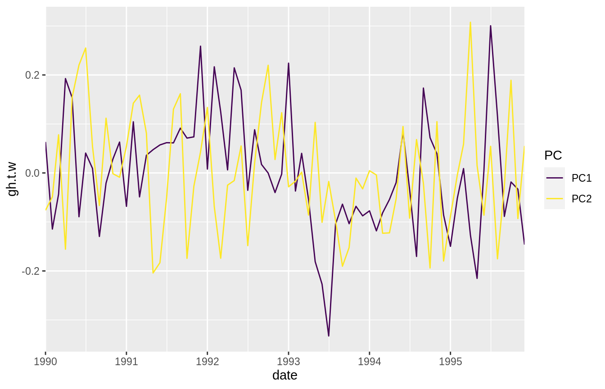
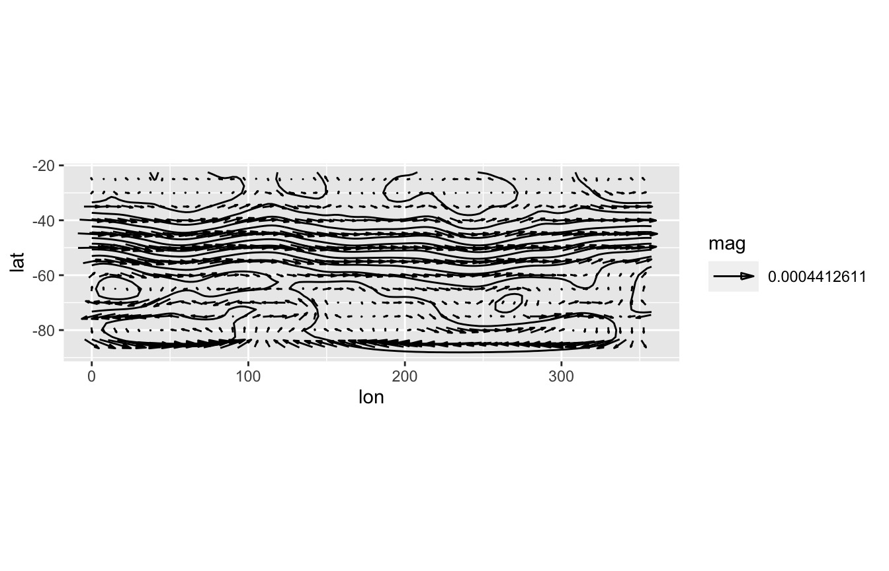

Working with data
Elio Campitelli
2019-11-12
Source:vignettes/Working-with-data.Rmd
Working-with-data.RmdGetting data
metR implements some functions to easily load data into R either from local files or from remote locations.
ReadNetCDF
The function ReadNetCDF() relies on the ncdf4 package to read netCDF files with ease. It intelligently reads dimensions and data and returns a tidy data.table with optional keyed columns for faster processing afterwards. It can also return an array with named dimensions or a vector, for the case of adding new columns to an existing data.table.
library(metR)
library(data.table)
library(ggplot2)
# If out = "vars", returns information about the available variables and
# dimensions
file <- system.file("extdata", "temperature.nc", package = "metR")
GlanceNetCDF(file)
#> ----- Variables -----
#> air:
#> mean Daily Air temperature in degK
#> Dimensions: lon by lat by level by time
#>
#>
#> ----- Dimensions -----
#> time: 1 values from 2010-07-09 to 2010-07-09
#> level: 17 values from 10 to 1000 millibar
#> lat: 73 values from -90 to 90 degrees_north
#> lon: 144 values from 0 to 357.5 degrees_eastNow that we know the name and the dimensions of the data, we can read it. ReadNetCDF() can also read only a (continuous) subset of the data.
air <- ReadNetCDF(file, subset = list(lat = 90:0, level = 925))
ggplot(air, aes(lon, lat)) +
geom_contour(aes(z = air, color = ..level..))
Since the most consuming part of reading the file is melting a multidimensional array into a tidy data.table, if we wanted to add another variable to the same data.table we could save time by only returning a vector. It is of the upmost importance that both variables are on the same exact grid.
air[, air2 := ReadNetCDF(file, out = "vector",
subset = list(lat = 90:0, level = 300))]
ggplot(air, aes(lon, lat)) +
geom_contour(aes(z = air2, color = ..level..))
Because ReadNetCDF() can read multiple variables at the same time, the out = "vector" output will be actually return a list of vectors (which integrates seamlessly with the data.table syntax). If one of the variables has degenerate dimensions (dimensions of length 1) then it will be recycled. That means that if the same file has Sea Surface Temperatures (a 2D field) and Air Temperature (a 3D field), then the returned data.table fill have an observation of Air Temperature and Sea Surface Temperature for each vertical level.
The netCDF format is very flexible and this function has not been tested on every possible file so things may break in strange cases. If you have a file that cannot be read with this function, please submit an issue.
GetTopography
GetTopography() retrieves topographic data from the ETOPO1 Global Relief Model into a convenient tidy data.table. By default, it also stores a cached version.
As an example, let’s look at a global relief map at 1/2° resolution with some ugly color palette.
# Not run because it needs internet access
# world <- GetTopography(0, 360, 90, -90, resolution = 1)
# ggplot(world, aes(lon, lat)) +
# geom_raster(aes(fill = h/1000)) +
# geom_contour(aes(z = h), breaks = 0, color = "black", size = 0.5) +
# coord_fixed(expand = FALSE) +
# scale_fill_gradientn(colors = topo.colors(6)[c(1, 2, 3, 4, 6)],
# values = scales::rescale(c(-11, 0, 0, 2, 7)),
# guide = "none") +
# theme_void()MaskLand
Related to this problem, MaskLand() returns a logical vector with TRUE if a point is over land.
air[, land := MaskLand(lon, lat)]
ggplot(air, aes(lon, lat)) +
geom_tile(aes(fill = land)) +
coord_quickmap()
With this, we can compare mean temperature over land and over sea by latitude.
ggplot(air[, .(air = mean(air) - 273.15), by = .(lat, land)],
aes(lat, air)) +
geom_line(aes(color = land))
The resolution of MaskLand() is, in principle, only limited by the polygons used as mask. Currently it can only use maps from the maps package (see ?maps::map).
GetSMNData
Finally, GetSMNData() retrieves data from Argentina’s National Weather Service’s public access. This is a rapidly evolving project, and data availability is not guaranteed. Currently available data are hourly station data, daily station maximum and minimum temperature, and global and diffuse radiation measured at Buenos Aires and Ushuaia.
Manipulate data
EOF
Empirical Orthogonal Functions (also known as Principal Component Analysis) is a widely use technique for dimensional reduction of large datasets. In R there are multiple packages that implement this methodology (in fact, base R has two functions) but, IMHO, they have awkward interfaces that don’t interact well with data.table (or dplyr) syntax. metR’s EOF() essentially performs a Singular Value Decomposition of the data and returns the left and right singular vectors, and singular values in a tidy format.
data(geopotential)
# Weigthed geopotential anomaly
geopotential[, gh.t.w := Anomaly(gh)*sqrt(cos(lat*pi/180)), by = .(lon, lat, month(date))]
eof <- EOF(gh.t.w ~ date | lon + lat, data = geopotential, n = 1:2)
str(eof)
#> List of 3
#> $ left :Classes 'data.table' and 'data.frame': 144 obs. of 3 variables:
#> ..$ date : Date[1:144], format: "1990-01-01" ...
#> ..$ PC : Ord.factor w/ 2 levels "PC1"<"PC2": 1 1 1 1 1 1 1 1 1 1 ...
#> ..$ gh.t.w: num [1:144] 0.0633 -0.1145 -0.0432 0.1926 0.1539 ...
#> ..- attr(*, ".internal.selfref")=<externalptr>
#> $ right:Classes 'data.table' and 'data.frame': 8064 obs. of 4 variables:
#> ..$ lon : num [1:8064] 0 2.5 5 7.5 10 12.5 15 17.5 20 22.5 ...
#> ..$ lat : num [1:8064] -22.5 -22.5 -22.5 -22.5 -22.5 -22.5 -22.5 -22.5 -22.5 -22.5 ...
#> ..$ PC : Ord.factor w/ 2 levels "PC1"<"PC2": 1 1 1 1 1 1 1 1 1 1 ...
#> ..$ gh.t.w: num [1:8064] 2.32e-04 4.67e-06 -1.17e-04 -1.47e-04 -1.12e-04 ...
#> ..- attr(*, ".internal.selfref")=<externalptr>
#> $ sdev :Classes 'data.table' and 'data.frame': 2 obs. of 3 variables:
#> ..$ PC: Ord.factor w/ 2 levels "PC1"<"PC2": 1 2
#> ..$ sd: num [1:2] 7050 4228
#> ..$ r2: num [1:2] 0.318 0.114
#> ..- attr(*, ".internal.selfref")=<externalptr>
#> - attr(*, "call")= language EOF(formula = gh.t.w ~ date | lon + lat, n = 1:2, data = geopotential)
#> - attr(*, "class")= chr [1:2] "eof" "list"
#> - attr(*, "suffix")= chr "PC"
#> - attr(*, "value.var")= chr "gh.t.w"In the returned list of data.tables the left (right) singular vectors are fields defined with the dimensions on the left (right) hand of the formula. In this case, the right data.table holds spatial fields and the left data.table holds a timeseries. If the order of the right hand side and left hand side of the formula are reversed, and rotate == FALSE, then the result is the same. Rotation of the singular vectors is perform via stats::varimax() and perform from the (scaled) right singular vector.
For completion, let’s plot each Principal Component.
ggplot(eof$right, aes(lon, lat)) +
geom_contour_fill(aes(z = gh.t.w), binwidth = 0.01) +
scale_fill_divergent() +
coord_polar() +
facet_wrap(~PC) 

Where the 1st Principal Component is clearly the Antarctic Oscillation and the 2nd Principal Component looks like the Pacific–South American Pattern.
ImputeEOF
As shown above, EOF() needs a complete data matrix. Imputing missing values is a huge problem on it’s own with a lot of different algorithms. metR offers ImputeEOF(), which is an implementation of the DINEOF algorithm for imputation of missing data. It’s interface is similar to that of EOF() but it returns a vector of imputed values.
geopotential <- geopotential[]
geopotential[sample(1:.N, .N*0.8), gh.na := gh]
geopotential[, imputed := ImputeEOF(gh.na ~ lon + lat | date, max.eof = 5)]
str(geopotential)
#> Classes 'data.table' and 'data.frame': 290304 obs. of 8 variables:
#> $ lon : num 0 2.5 5 7.5 10 12.5 15 17.5 20 22.5 ...
#> $ lat : num -22.5 -22.5 -22.5 -22.5 -22.5 -22.5 -22.5 -22.5 -22.5 -22.5 ...
#> $ lev : int 700 700 700 700 700 700 700 700 700 700 ...
#> $ gh : num 3164 3163 3162 3162 3163 ...
#> $ date : Date, format: "1990-01-01" "1990-01-01" ...
#> $ gh.t.w : num -3.82 -3.59 -2.86 -2.4 -2.07 ...
#> $ gh.na : num 3164 3163 NA 3162 3163 ...
#> $ imputed: num 3164 3163 3167 3162 3163 ...
#> ..- attr(*, "eof")= num 5
#> ..- attr(*, "rmse")= num 26.9
#> - attr(*, ".internal.selfref")=<externalptr>The imputed vector is returned along with the Root Mean Square Error estimated from crossvalidation and the number of EOFs used in the imputation as attributes. In this case, with 5 EOFs the imputed values have an estimated rmse of 26.9.
Interpolate
Interpolate() is a convenient wrapper of fields::interp.surface() that makes it work better inside data.tables. It can be used to a new grid or to add interpolated values to an existing grid. It’s easy to interpolate multiple values with the formula interface.
# new grid
x.out <- seq(0, 360, by = 10)
y.out <- seq(-90, 0, by = 10)
interpolated <- geopotential[, Interpolate(gh | gh.t.w ~ lon + lat, x.out, y.out),
by = date]To add interpolated values to an existing data.table use grid = FALSE.
Physics
Derivates
Derivation is the bread and butter of the researcher so Derivate() offers a convenient interface for derivation using finite differences of multidimensional data. It has support for cyclical boundary conditions and for the special case of spherical coordinates (think: Earth).
geopotential[date == date[1], # think: gh as a function of lon and lat
c("gh.dlon", "gh.dlat") := Derivate(gh ~ lon + lat,
cyclical = c(TRUE, FALSE),
sphere = TRUE)]
ggplot(geopotential[date == date[1]], aes(lon, lat)) +
geom_contour_fill(aes(z = gh)) +
geom_vector(aes(dx = gh.dlon, dy = gh.dlat), skip = 2,
scale = 3e4) +
coord_quickmap()
#> Warning: Ignoring unknown parameters: scale
There are several wrapers around Derivate() to perform other common related operations, Laplacian(), Divergence() and Vorticity().
GeostrophicWind
Finally, the function GeostrophicWind() computes geostrophic wind from geopotential height.
geopotential[date == date[1], c("u", "v") := GeostrophicWind(gh, lon, lat)]
ggplot(geopotential[date == date[1]], aes(lon, lat)) +
geom_contour(aes(z = gh)) +
geom_vector(aes(dx = dlon(u, lat), dy = dlat(v)),
skip.y = 1, skip.x = 2, scale = 5e4) +
coord_quickmap()
#> Warning: Ignoring unknown parameters: scale
Thermodynamics
metR offers several functions related to thermodynamical processes in the atmosphere (see ?thermodynamics). These are IdealGas(), Adiabat(), VirtualTemperature(), MixingRatio(), ClausiusClapeyron() and DewPoint(). Each function represents a different physical relationship between variables and computes one of them from the others.
For example, IdealGas() uses the ideal gas law to compute pressure, temperature or density.
# Density of air at 20°C and 1030hPa.
(rho <- IdealGas(1013*100, 20 + 273.15))
#> [1] 1.203788
# Of course, the temperature of air at that density
# and same pressure is 20°C.
IdealGas(1013*100, rho = rho) - 273.15
#> [1] 20Different variables can be derived by combining these functions. For example, it’s easy to calculate relative humidity from data on temperature and dewpoint, then saturation mixing ratio from pressure and temperature and finally the actual mixing ratio.
# Relative humidity from T and Td
t <- 25 + 273.15
td <- 20 + 273.15
p <- 1000000
(rh <- ClausiusClapeyron(td)/ClausiusClapeyron(t))
#> [1] 0.7380251
# Mixing ratio
ws <- MixingRatio(p, ClausiusClapeyron(t))
(w <- ws*rh)
#> [1] 0.001456004Of course, w can be also be computed by DewPoint(p, td = td) which gives essentially the same result: 0.0014548.